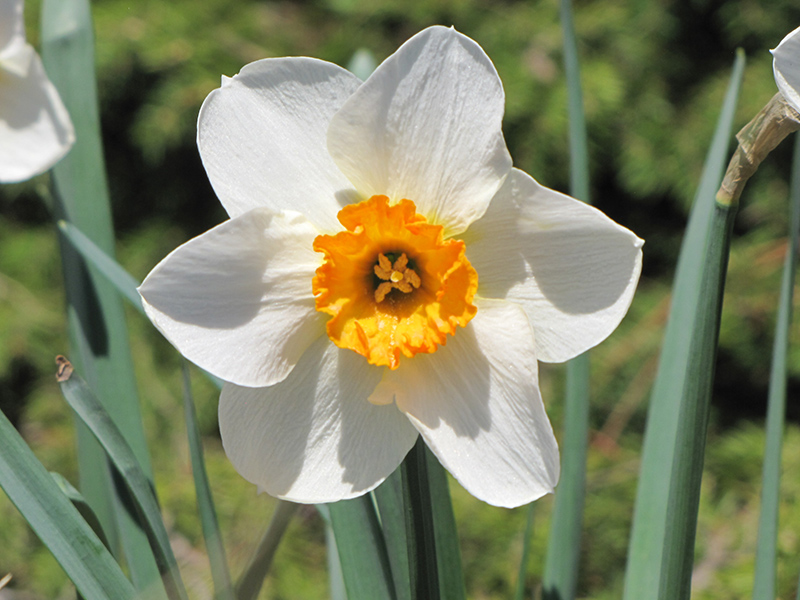
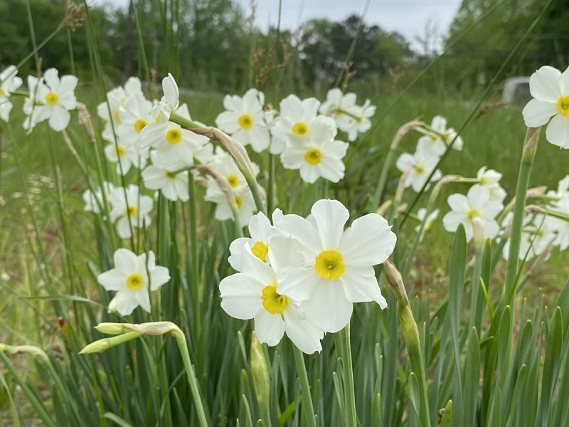
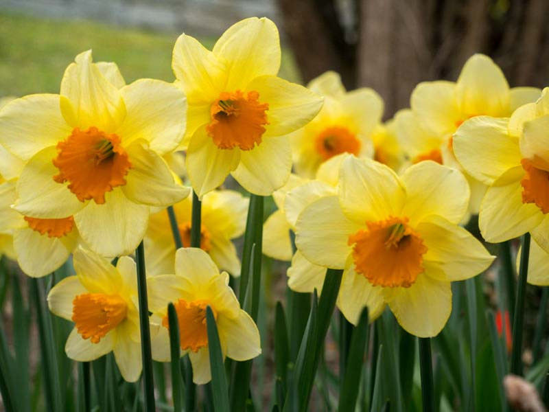
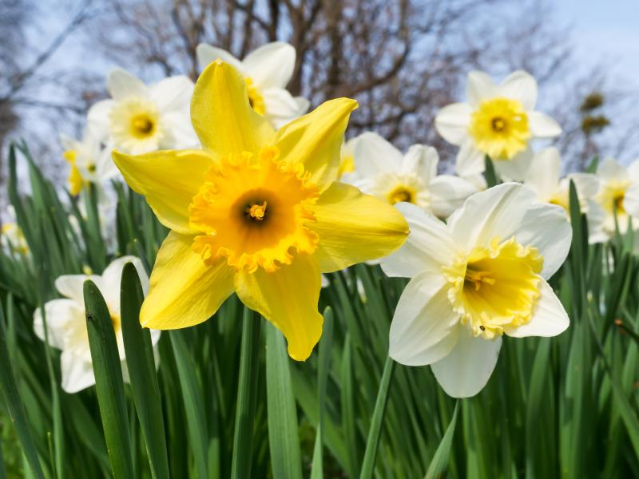

Meaning: Unrequited love
Origin
The Greek legend of Narcissus, from which the scientific name of this plant derives, tells of a handsome and proud hunter who, upon seeing his reflection in the waters of a spring, falls in love with himself. Unable to part from his own image, he eventually perishes. A daffodil then blooms to mark his grave.
Gallery



